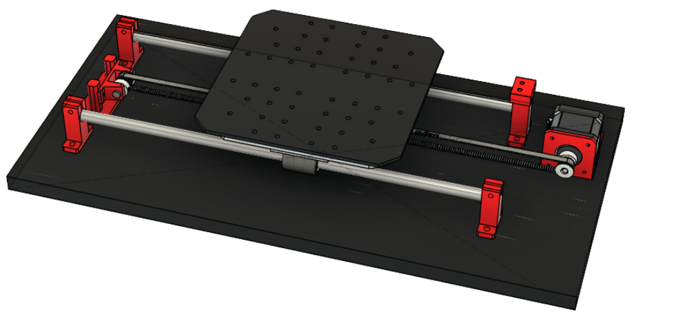

Propuesta
SISMA propone la fabricación de un simulador de sismos a escala, donde se puedan probar la estabilidad de maquetas y ver cómo reaccionan ante distintos tipos de sismos

Simulador de sismos para maquetas estructurales y análisis de respuesta dinámica

Proyecto
SISMA propone la fabricación de un simulador de sismos a escala, donde se puedan probar la estabilidad de maquetas y ver cómo reaccionan ante distintos tipos de sismos
Consolidar un prototipo capaz de simular maquetas estructurales, controlar parámetros con precisión y reproducir sismos históricos o actuales, integrando un sistema de sensado y registro de datos para análisis comparativos.
Permite estudiar la reacción de la maqueta, ajustar el diseño de la estructura pudiendo ver la reaccion directa, y comparar resultados para interpretar el comportamiento dinámico de una estructura.
Información
Se reproduce la acción de un sismo mediante un movimiento controlado que genera vibraciones semejantes a las que afectan a una estructura durante un evento real.
La maqueta representa una estructura simplificada, que representa una construcción real a escala y permite observar deformaciones, desplazamientos y puntos críticos bajo la acción de los sismos generados.
Mediante la variación de parámetros de simulacion y la obtención de datos mediante el sistema de sensado integrado, es posible interpretar la respuesta dinámica de la estructura y comparar resultados con fines de estudio técnico.
Equipo
Responsable de la organización del proyecto y la coordinación del equipo.
Encargado tanto del marketing y diseño del proyecto, como de la redacción del speech y discurso de venta.
Se encarga del diseño, fabricación y mejoras del prototipo, como de la confección de todos los algoritmos de control del mismo.
Funciones
Estudio del fenómeno sísmico, selección de parámetros relevantes y análisis de la mejor forma de representar la vibración sobre la maqueta.
Definición de la geometría, materiales y sistema de movimiento necesario para recrear la respuesta de la estructura bajo carga dinámica.
Configuración del sistema de accionamiento, la lógica de control y los componentes electrónicos que permiten generar la excitación y monitorear el funcionamiento.
Validación del comportamiento bajo distintos niveles de intensidad, ajuste de variables y análisis comparativo de los resultados obtenidos.
Tecnología

Funcionamiento
La estructura se instala sobre una base estable y se define la configuración de simulacion para simular distintos niveles de vibración.
El sistema pone en marcha el movimiento controlado y genera oscilaciones que reproducen la respuesta de una construcción ante un sismo.
Se registran deformaciones, desplazamientos y estabilidad de la maqueta para identificar puntos críticos y evaluar la respuesta estructural.
Contacto